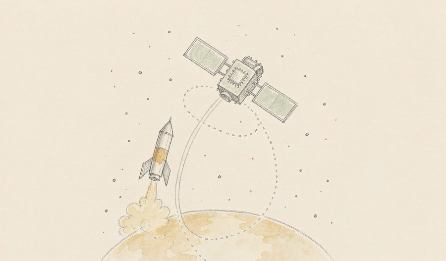
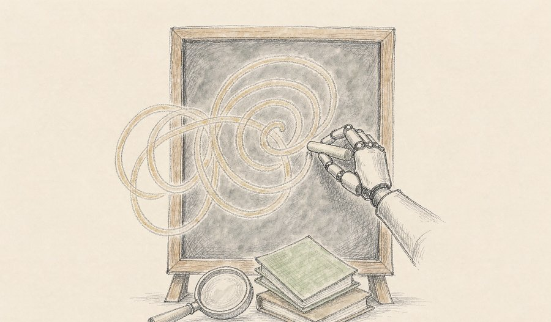
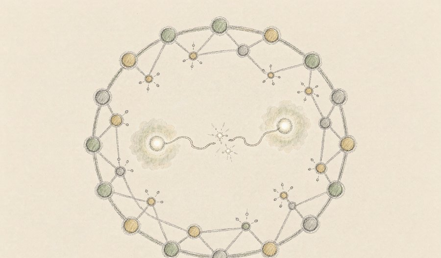
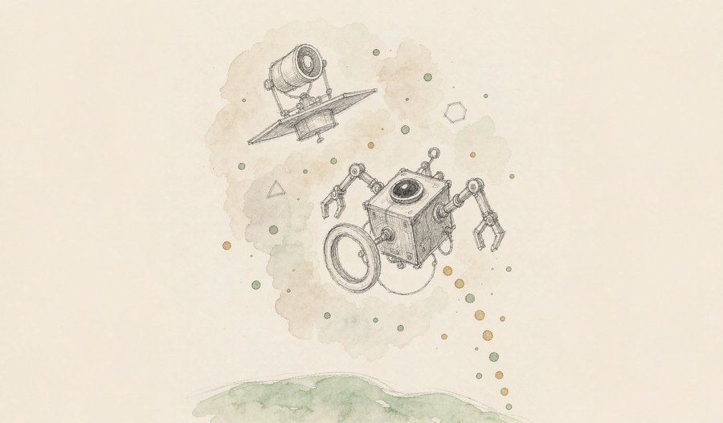
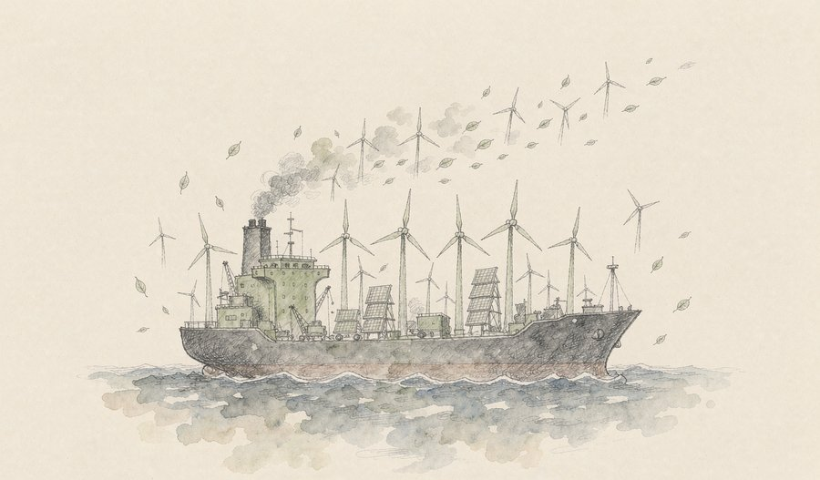
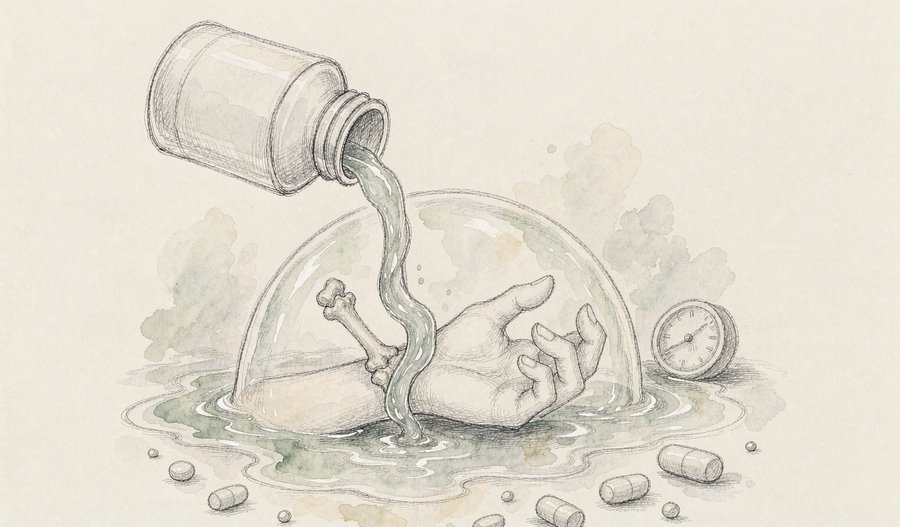
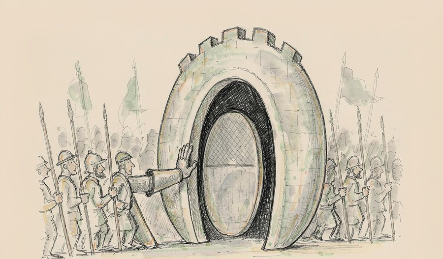
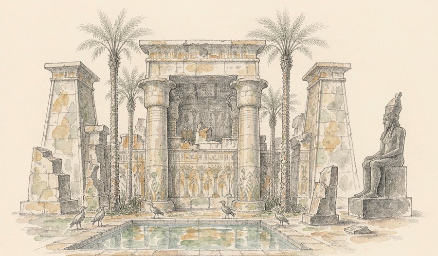
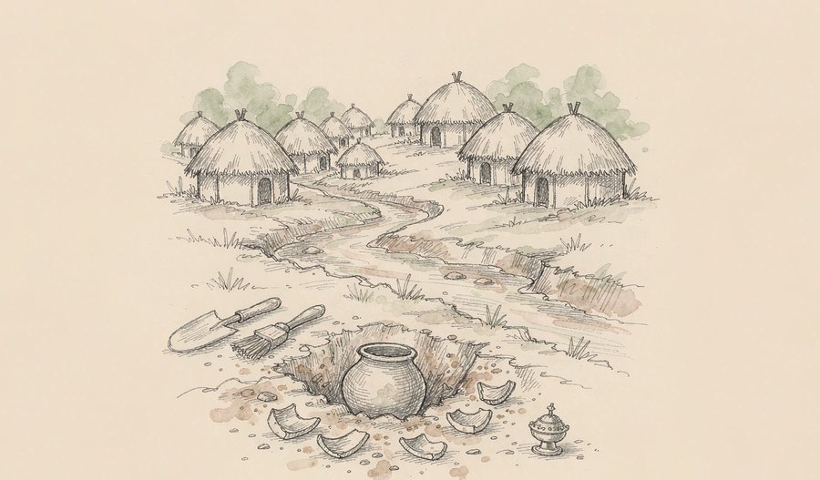

一颗芯片，下周要去太空赶考。
谷歌官宣「太阳捕手」首颗试验卫星定档10月1日：四颗自研TPU搭上猎鹰9号，去近地轨道接受振动、辐射、散热三重考验。同一个星期，Claude把一段粒子物理计算一口气推到九圈，由实验室教授亲手复核通过；量子计算机则在实验室里模拟出物质「凭空出现」的瞬间。
地球上，两款罕见病新药接连获批，一套让肌肉不再变成骨头，一个揪出了压制抗癌免疫的「幕后黑手」。
而在尼罗河东岸，中国考古队在三千年的神庙区里，发现了一座连埃及文献都没记载过的圣湖。
今天最重的一条线，是算力与智能在「搬家」：谷歌要把AI芯片送上轨道试运行，为太空数据中心探路；Claude和量子计算机则分别攻进了理论物理的计算腹地。算力去往更高处，智能钻向更深处——这是本周科技新闻共同的走向。
01

9月24日，谷歌宣布「太阳捕手」计划首颗原型卫星定档10月1日，搭乘SpaceX猎鹰9号火箭升空。这颗与Planet公司合作的卫星携带四颗自研TPU芯片，将在近地轨道测试AI芯片能否承受发射冲击、太空辐射与真空散热三重考验，芯片局部需扛住50至100G的加速度载荷。
观此：这一步的意义在于「从纸面到轨道」。谷歌此前已在地面做完功课：质子束辐照显示TPU耐辐射能力超过五年任务预期，热真空舱测试也已完成，但原型星上的散热方案只够芯片连续运行约15分钟。谷歌的长期设想是让数十颗卫星组成用激光互联的算力集群——轨道太阳能发电效率理论上可达地面的约8倍，这是整盘棋的诱饵。2027年还有双星激光组网试验，真正建成太空数据中心仍有很长的路，但方向已经从设想变成了排期表。
来源：央视财经
02

9月26日，AI圈流传一则消息：Claude在一次任务中完成了粒子物理领域连续九圈的微扰计算，斯坦福SLAC实验室的教授独立复核后确认结果无误。这类计算过去需要研究生耗费数周反复推导，如今由模型一次完成。
观此：这件小事的分量在于「可信」二字。AI做数学题不稀奇，稀奇的是物理学家愿意花时间逐行验算并签字背书——这意味着模型的推导过程已经严谨到能进入专业工作流。科学计算里大量「脏活累活」正是这类多圈展开：机械、重复、极易出错，却要求绝对精确。如果AI能稳定接住这一层，科研的瓶颈将更多从「算得动」转移到「问得好」。上一次人类把计算外包给机器，是算盘换成计算机；这一次，外包的是推导本身。
来源：AITOP日报
03
9月26日，Qwen团队发布多模态智能体模型Qwen3.8-Omni-Flash，采用稀疏MoE架构，上下文长度达100万token，能直接完成视频剪辑与长音频翻译，并配套开源两个多模态应用框架。同期开源社区动作密集：Docker联合Linux基金会把沙箱工具推为开放标准，谷歌也开源了智能体编排运行时。
观此：多模态模型不新鲜，新鲜的是「智能体化」——模型不再只回答问题，而是直接动手干活：剪片子、翻字幕、调度工具链。百万token上下文意味着一部两小时的电影可以整部喂进去，这在两年前还是奢望。基础设施同步开源也值得留意，编排、沙箱、训练环境正在被一件件搬进公共标准，智能体生态的地基比模型本身长得更快。对普通用户来说，最直观的变化可能是：以后让AI「帮我把这段视频剪出高光」，它是真的会交活回来。
来源：AITOP日报
04

9月26日，杜克大学团队在《自然·物理》发表成果：研究者在离子阱量子模拟器中实时观测到「弦断裂」的完整过程——高能状态下真空中凭空产生一对物质粒子，并被一根能量弦连接；弦被拉断的瞬间，新的粒子对随之诞生。这正是早期宇宙粒子创生过程的微缩模型。
观此：「无中生有」听起来像玄学，但在量子场论里，真空从来不空，只是平时没有能量去唤醒它。过去检验这类理论只能靠纸上推导和超级计算机近似，如今一百多个原子被精确操控，让教科书里的方程在实验室里逐帧重演。这类模拟器还不能通算一切，但它选对了战场：专攻经典计算机算不动的极端情形。理解宇宙最初一瞬物质如何涌现，正是从这里一寸一寸铺开的。
来源：ScienceDaily
05

9月25日，美国凯塔利斯特公司确认，其机器人航天器LINK未能完成抬升NASA「雨燕」天文台轨道的任务，当天脱离轨道再入大气层。LINK今年7月3日发射，入轨后电子故障接连出现，两台反作用轮失效导致航天器一度每秒旋转约9度；8月19日双方正式终止救援，LINK在轨共85天，任务耗资约3000万美元。
观此：失败本身是重要数据。「雨燕」天文台服役已超二十年、设计寿命只有两年，又没有推进系统，这次本是人类首次尝试为无维护设计的政府卫星做在轨续命。任务虽然没有成功，但团队临终前仍让LINK逼近到距「雨燕」12至15公里处完成了拍照测试，三条机械臂的数据全部带回。太空经济讨论了多年「一次性卫星」何时变成「可维修卫星」，这次的答案是：还差得远，但剧本已经排练过一遍了。
来源：财联社
06

9月26日，参考消息援引路透社报道：位于赫尔辛基的能源与清洁空气研究中心测算，中国去年出口的电池、风机、电动汽车与光伏板，在使用周期内合计可减排3.74亿吨二氧化碳——超过英国全年的碳排放总量；2025年出口清洁技术全生命周期减排预计达69亿吨，较2024年增长31%。
观此：气候议题过去习惯按国界算账，这笔测算换了一个算法：看装备流向哪里、在哪里替代化石能源。最典型的战场是南亚——巴基斯坦的光伏装机热潮几乎全部由中国面板撑起，其光伏发电占比已位居全球前列。五年前很少有人预料到，太阳能与电动车会在新兴市场以这样的速度铺开，供给放量与两次化石能源价格冲击共同完成了这次推动。全球脱碳的进度条，越来越取决于制造与出口的规模效应，这可能是比任何谈判文件都更硬的变量。
来源：参考消息
07

9月25日，美国FDA批准口服药物Atebrioz（zilurgisertib）上市，用于减少12岁及以上进行性骨化性纤维发育不良（FOP）患者的新发异位骨化。FOP是超罕见遗传病，患者的肌肉、肌腱会逐渐变成骨头，全球患者约900人。临床试验中，用药组新发骨化病灶总体积较安慰剂组降低超过99%，效果持续至第48周。
观此：FOP常被称作「石头人综合征」——身体一点点「石化」，连掰直手指都可能催生新骨。这款药的思路是釜底抽薪：绝大多数患者体内ALK2受体异常活化，正是异位成骨的开关，药物直接把它按住。数字同样值得琢磨：主要终点的统计学表现并不漂亮，但影像学指标压倒性一致，最终说服监管层的正是这组近100%的体积差。对超罕见病而言，「全世界只有900个病人」的药也能做成，这是孤儿药制度存在的全部意义。
来源：药明康德
08

9月26日《自然》报道：科学家首次确认分泌型磷脂酶PLA2G2D是一种全新的免疫检查点，它由肿瘤引流淋巴结中的特定巨噬细胞分泌，直接抑制早期激活的T细胞增殖。对黑色素瘤患者的870277个单细胞原位图谱显示，远端复发患者淋巴结中该分子显著上调；阻断它与PD-1抑制剂联用，在小鼠中展现出显著协同抗癌效果。
观此：免疫治疗的火力过去几乎全部砸向肿瘤微环境，但这篇研究把镜头拉回了「新兵训练营」——T细胞第一次被激活的淋巴结。训练场里就站着「教官」，把还没上场的T细胞按住不动，这解释了为什么部分患者对PD-1类药物响应不佳。更巧妙的是，PLA2G2D的抑制作用大部分独立于其酶活性，意味着药物设计可以绕开传统酶抑制的老路。检查点家族二十年没添过几个新成员，这一次把战线从肿瘤内部推回到了免疫系统的源头。
来源：奇点网
09

9月24日，国家文物局发布中外联合考古进展：中埃联合考古队确认，卢克索孟图神庙区存在此前完全未知的南部圣湖。截至2026年，联合队已发掘神庙区约2300平方米，首次在同一神庙区内发现南北双圣湖并立的格局——这在两百多年埃及学研究史与现存埃及文献中均无记载。发掘同时完整揭露了第二至五座奥西里斯小神殿，出土数十件雕像。
观此：圣湖是埃及神庙仪式用水的核心，学界的默认设定是「一庙一湖」，双圣湖意味着整个祭祀体系的运作方式可能被重新想象。耐人寻味的是线索藏在「废料」里：圣湖石构件中大量再利用石块带着铭文与雕像，成为断代的关键证据。这片神庙区共有六座奥西里斯神殿，集中兴建于古埃及渐趋衰落的第25、26王朝——在一个国力下行的时代，人们把更多神殿献给象征重生的奥西里斯。石头不会说话，但排布方式本身就是历史。
来源：新华社
10

9月26日，广东惠州公布先秦时期聚落考古中期成果：一年多来，考古团队在博罗县完成500余平方公里系统调查，新发现先秦时期遗址170余处，并对罗阳遗址石龙头地点实施抢救性发掘，出土陶器、原始瓷器、青铜器、铁器乃至陶塑人像，成果已同步向公众展示。
观此：170余处是什么概念？相当于平均每三平方公里就发现一处先秦遗存，东江流域在岭南早期文明版图上的密度被整体刷新。更值得关注的是方法论：不是发现一件宝贝，而是摸清一整片聚落群「谁挨着谁、谁大谁小」——这正是从「挖宝」走向「复原古代社会」的当代考古路径。岭南先秦史的书面记载近乎空白，这幅用脚走出来的聚落地图，未来会成为珠江流域文明叙事的底稿。
来源：南方都市报
算力的边界，正在被重新画。 谷歌把四颗TPU装进一颗卫星，表面看是一次发射，实质是在为AI的下一场能源危机找出口：地面数据中心抢电、抢地、抢冷却水，而轨道上的太阳能几乎不歇班。谷歌自己也不敢指望速成——原型星散热只够芯片运行15分钟，激光组网要等到2027年，但把排期表亮出来本身就是态度。同一周里，AI的另一条边界也悄悄移动了：Claude推完九圈粒子物理计算、由教授复核背书，说明模型已经走进科研的严谨区。算力向上（太空）、智能向深（科学计算），两条线迟早会在轨道数据中心交汇。
罕见病药物密集获批，背后是一套制度的胜利。 本周FDA连批数款新药，FOP口服药让用药组新发骨化体积降低超过99%，基因疗法把无药可治的黏多糖贮积症送进了「可干预」名单。这些药面对的市场小得可怜——FOP全球约900人——却是药企愿意沉下去十年做出来的。科学上，肿瘤免疫领域也在换脑子：新检查点PLA2G2D把战场从肿瘤内部拉回淋巴结，提醒我们免疫治疗还有大片空白地带。医药的进步从来不是灵光一现，而是一套让「小众的坚持」也能跑通的制度在持续输出。
考古的新闻感，来自「打破默认设定」。 孟图神庙双圣湖之所以是头版级发现，不是因为挖出了金器，而是因为「一庙一湖」这个两百年的默认设定被推翻了；惠州170余处先秦遗址也是同理，它改写的是岭南早期聚落密度的想象。好考古报道的价值不在于「又挖到了什么」，而在于告诉我们：我们对过去确信的那些「常识」，有多少其实只是还没遇到反例。
如果只记一件事，请记住：10月1日，四颗AI芯片将搭乘猎鹰9号升空——人类第一次把AI算力的考场搬到了太空。
今天的关键词是「越过边界」：算力越过大气层，智能越过人工推导，药物越过罕见病无解的旧账。科学侧从真空创生到圣湖重见，天上地下都在补写认知的空白页。精选十条里，科技与科学占六席，是本期的绝对主线。
内容仅供资讯参考
本文插画由 AI 辅助绘制。